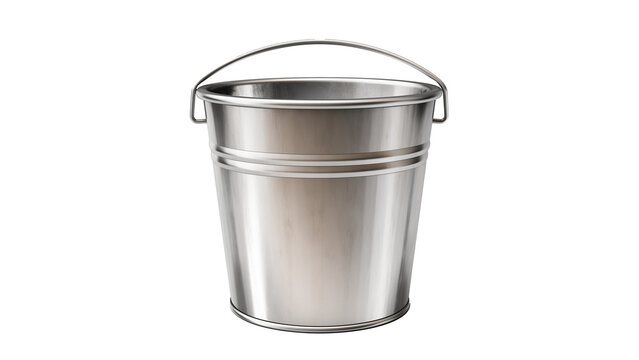
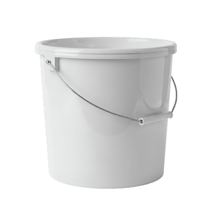

| Typ wiadra | wiadro metalowe | wiadro plastikowe |
|---|---|---|
| materiał wykonania | matal | plastik |
| wytrzymałość | wytrzymałe | mniej wytrzymałe |


Wiadro (inaczej kubeł) naczynie w kształcie walca lub odwróconego, ściętego stożka,
dawniej najczęściej blaszane, obecnie z tworzywa sztucznego, zaopatrzone w ruchomy, kabłąkowaty uchwyt.
Używane jest zazwyczaj jako pojemnik na ciecze lub materiały sypkie, głównie do ich ręcznego transportu.